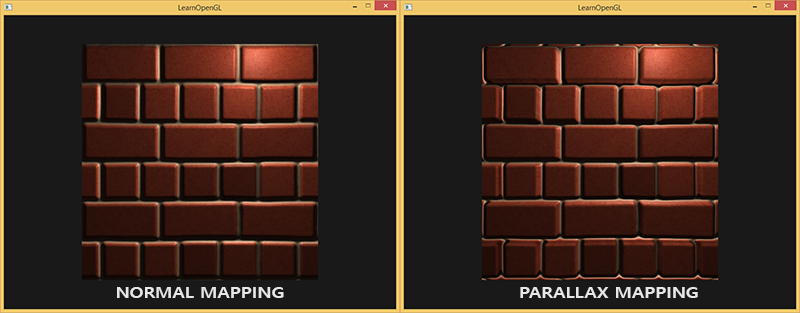
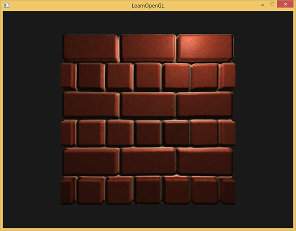
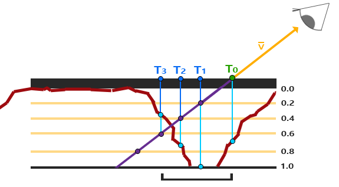
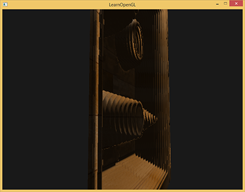
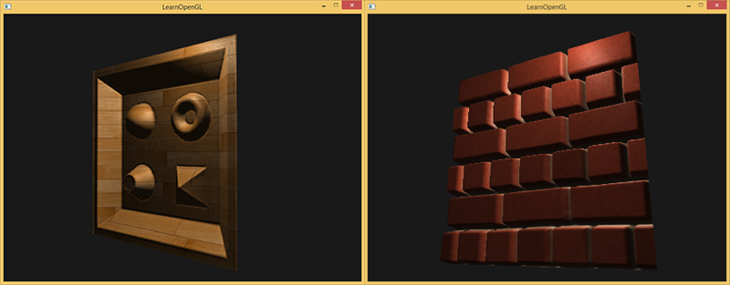

视差贴图
| 原文 | Parallax Mapping |
|---|---|
| 作者 | JoeyDeVries |
| 翻译 | Django |
| 校对 | 暂无 |
Note
本节暂未进行完全的重写，错误可能会很多。如果可能的话，请对照原文进行阅读。如果有报告本节的错误，将会延迟至重写之后进行处理。
视差贴图(Parallax Mapping)技术和法线贴图差不多，但它有着不同的原则。和法线贴图一样视差贴图能够极大提升表面细节，使之具有深度感。它也是利用了视错觉，然而对深度有着更好的表达，与法线贴图一起用能够产生难以置信的效果。视差贴图和光照无关，我在这里是作为法线贴图的技术延续来讨论它的。需要注意的是在开始学习视差贴图之前强烈建议先对法线贴图，特别是切线空间有较好的理解。
视差贴图属于位移贴图(Displacement Mapping)技术的一种，它对根据储存在纹理中的几何信息对顶点进行位移或偏移。一种实现的方式是比如有1000个顶点，根据纹理中的数据对平面特定区域的顶点的高度进行位移。这样的每个纹理像素包含了高度值纹理叫做高度贴图。一张简单的砖块表面的高度贴图如下所示：

整个平面上的每个顶点都根据从高度贴图采样出来的高度值进行位移，根据材质的几何属性平坦的平面变换成凹凸不平的表面。例如一个平坦的平面利用上面的高度贴图进行置换能得到以下结果：

置换顶点有一个问题就是平面必须由很多顶点组成才能获得具有真实感的效果，否则看起来效果并不会很好。一个平坦的表面上有1000个顶点计算量太大了。我们能否不用这么多的顶点就能取得相似的效果呢？事实上，上面的表面就是用6个顶点渲染出来的（两个三角形）。上面的那个表面使用视差贴图技术渲染，位移贴图技术不需要额外的顶点数据来表达深度，它像法线贴图一样采用一种聪明的手段欺骗用户的眼睛。
视差贴图背后的思想是修改纹理坐标使一个fragment的表面看起来比实际的更高或者更低，所有这些都根据观察方向和高度贴图。为了理解它如何工作，看看下面砖块表面的图片：

这里粗糙的红线代表高度贴图中的数值的立体表达，向量代表观察方向。如果平面进行实际位移，观察者会在点看到表面。然而我们的平面没有实际上进行位移，观察方向将在点与平面接触。视差贴图的目的是，在位置上的fragment不再使用点的纹理坐标而是使用点的。随后我们用点的纹理坐标采样，观察者就像看到了点一样。
这个技巧就是描述如何从点得到点的纹理坐标。视差贴图尝试通过对从fragment到观察者的方向向量进行缩放的方式解决这个问题，缩放的大小是处fragment的高度。所以我们将的长度缩放为高度贴图在点处采样得来的值。下图展示了经缩放得到的向量：

我们随后选出以及这个向量与平面对齐的坐标作为纹理坐标的偏移量。这能工作是因为向量是使用从高度贴图得到的高度值计算出来的，所以一个fragment的高度越高位移的量越大。
这个技巧在大多数时候都没问题，但点是粗略估算得到的。当表面的高度变化很快的时候，看起来就不会真实，因为向量最终不会和接近，就像下图这样：

视差贴图的另一个问题是，当表面被任意旋转以后很难指出从获取哪一个坐标。我们在视差贴图中使用了另一个坐标空间，这个空间向量的x和y元素总是与纹理表面对齐。如果你看了法线贴图教程，你也许猜到了，我们实现它的方法，是的，我们还是在切线空间中实现视差贴图。
将fragment到观察者的向量转换到切线空间中，经变换的向量的x和y元素将于表面的切线和副切线向量对齐。由于切线和副切线向量与表面纹理坐标的方向相同，我们可以用的x和y元素作为纹理坐标的偏移量，这样就不用考虑表面的方向了。
理论都有了，下面我们来动手实现视差贴图。
视差贴图
我们将使用一个简单的2D平面，在把它发送给GPU之前我们先计算它的切线和副切线向量；和法线贴图教程做的差不多。我们将向平面贴diffuse纹理、法线贴图以及一个位移贴图，你可以点击链接下载。这个例子中我们将视差贴图和法线贴图连用。因为视差贴图生成表面位移了的幻觉，当光照不匹配时这种幻觉就被破坏了。法线贴图通常根据高度贴图生成，法线贴图和高度贴图一起用能保证光照能和位移相匹配。
你可能已经注意到，上面链接上的那个位移贴图和教程一开始的那个高度贴图相比是颜色是相反的。这是因为使用反色高度贴图（也叫深度贴图）去模拟深度比模拟高度更容易。下图反映了这个轻微的改变：

我们再次获得和，但是这次我们用向量减去点的纹理坐标得到。我们通过在着色器中用1.0减去采样得到的高度贴图中的值来取得深度值，而不再是高度值，或者简单地在图片编辑软件中把这个纹理进行反色操作，就像我们对连接中的那个深度贴图所做的一样。
位移贴图是在像素着色器中实现的，因为三角形表面的所有位移效果都不同。在像素着色器中我们将需要计算fragment到观察者到方向向量所以我们需要观察者位置和在切线空间中的fragment位置。法线贴图教程中我们已经有了一个顶点着色器，它把这些向量发送到切线空间，所以我们可以复制那个顶点着色器：
#version 330 core
layout (location = 0) in vec3 position;
layout (location = 1) in vec3 normal;
layout (location = 2) in vec2 texCoords;
layout (location = 3) in vec3 tangent;
layout (location = 4) in vec3 bitangent;
out VS_OUT {
vec3 FragPos;
vec2 TexCoords;
vec3 TangentLightPos;
vec3 TangentViewPos;
vec3 TangentFragPos;
} vs_out;
uniform mat4 projection;
uniform mat4 view;
uniform mat4 model;
uniform vec3 lightPos;
uniform vec3 viewPos;
void main()
{
gl_Position = projection * view * model * vec4(position, 1.0f);
vs_out.FragPos = vec3(model * vec4(position, 1.0));
vs_out.TexCoords = texCoords;
vec3 T = normalize(mat3(model) * tangent);
vec3 B = normalize(mat3(model) * bitangent);
vec3 N = normalize(mat3(model) * normal);
mat3 TBN = transpose(mat3(T, B, N));
vs_out.TangentLightPos = TBN * lightPos;
vs_out.TangentViewPos = TBN * viewPos;
vs_out.TangentFragPos = TBN * vs_out.FragPos;
}
在这里有件事很重要，我们需要把position和在切线空间中的观察者的位置viewPos发送给像素着色器。
在像素着色器中，我们实现视差贴图的逻辑。像素着色器看起来会是这样的：
#version 330 core
out vec4 FragColor;
in VS_OUT {
vec3 FragPos;
vec2 TexCoords;
vec3 TangentLightPos;
vec3 TangentViewPos;
vec3 TangentFragPos;
} fs_in;
uniform sampler2D diffuseMap;
uniform sampler2D normalMap;
uniform sampler2D depthMap;
uniform float height_scale;
vec2 ParallaxMapping(vec2 texCoords, vec3 viewDir);
void main()
{
// Offset texture coordinates with Parallax Mapping
vec3 viewDir = normalize(fs_in.TangentViewPos - fs_in.TangentFragPos);
vec2 texCoords = ParallaxMapping(fs_in.TexCoords, viewDir);
// then sample textures with new texture coords
vec3 diffuse = texture(diffuseMap, texCoords);
vec3 normal = texture(normalMap, texCoords);
normal = normalize(normal * 2.0 - 1.0);
// proceed with lighting code
[...]
}
我们定义了一个叫做ParallaxMapping的函数，它把fragment的纹理坐标和切线空间中的fragment到观察者的方向向量为输入。这个函数返回经位移的纹理坐标。然后我们使用这些经位移的纹理坐标进行diffuse和法线贴图的采样。最后fragment的diffuse颜色和法线向量就正确的对应于表面的经位移的位置上了。
我们来看看ParallaxMapping函数的内部：
vec2 ParallaxMapping(vec2 texCoords, vec3 viewDir)
{
float height = texture(depthMap, texCoords).r;
vec2 p = viewDir.xy / viewDir.z * (height * height_scale);
return texCoords - p;
}
这个相对简单的函数是我们所讨论过的内容的直接表述。我们用本来的纹理坐标texCoords从高度贴图中来采样，得到当前fragment的高度。然后计算出，x和y元素在切线空间中，viewDir向量除以它的z元素，用fragment的高度对它进行缩放。我们同时引入额一个height_scale的uniform，来进行一些额外的控制，因为视差效果如果没有一个缩放参数通常会过于强烈。然后我们用减去纹理坐标来获得最终的经过位移纹理坐标。
有一个地方需要注意，就是viewDir.xy除以viewDir.z那里。因为viewDir向量是经过了标准化的，viewDir.z会在0.0到1.0之间的某处。当viewDir大致平行于表面时，它的z元素接近于0.0，除法会返回比viewDir垂直于表面的时候更大的向量。所以，从本质上，相比正朝向表面，当带有角度地看向平面时，我们会更大程度地缩放的大小，从而增加纹理坐标的偏移；这样做在视角上会获得更大的真实度。
有些人更喜欢不在等式中使用viewDir.z，因为普通的视差贴图会在角度上产生不尽如人意的结果；这个技术叫做有偏移量限制的视差贴图（Parallax Mapping with Offset Limiting）。选择哪一个技术是个人偏好问题，但我倾向于普通的视差贴图。
最后的纹理坐标随后被用来进行采样（diffuse和法线）贴图，下图所展示的位移效果中height_scale等于0.1：

这里你会看到只用法线贴图和与视差贴图相结合的法线贴图的不同之处。因为视差贴图尝试模拟深度，它实际上能够根据你观察它们的方向使砖块叠加到其他砖块上。
在视差贴图的那个平面里你仍然能看到在边上有古怪的失真。原因是在平面的边缘上，纹理坐标超出了0到1的范围进行采样，根据纹理的环绕方式导致了不真实的结果。解决的方法是当它超出默认纹理坐标范围进行采样的时候就丢弃这个fragment：
texCoords = ParallaxMapping(fs_in.TexCoords, viewDir);
if(texCoords.x > 1.0 || texCoords.y > 1.0 || texCoords.x < 0.0 || texCoords.y < 0.0)
discard;
丢弃了超出默认范围的纹理坐标的所有fragment，视差贴图的表面边缘给出了正确的结果。注意，这个技巧不能在所有类型的表面上都能工作，但是应用于平面上它还是能够是平面看起来真的进行位移了：

看起来不错，运行起来也很快，因为我们只要给视差贴图提供一个额外的纹理样本就能工作。当从一个角度看过去的时候，会有一些问题产生（和法线贴图相似），陡峭的地方会产生不正确的结果，从下图你可以看到：

问题的原因是这只是一个大致近似的视差映射。还有一些技巧让我们在陡峭的高度上能够获得几乎完美的结果，即使当以一定角度观看的时候。例如，我们不再使用单一样本，取而代之使用多样本来找到最近点会得到怎样的结果？
陡峭视差映射
陡峭视差映射(Steep Parallax Mapping)是视差映射的扩展，原则是一样的，但不是使用一个样本而是多个样本来确定向量到。即使在陡峭的高度变化的情况下，它也能得到更好的结果，原因在于该技术通过增加采样的数量提高了精确性。
陡峭视差映射的基本思想是将总深度范围划分为同一个深度/高度的多个层。从每个层中我们沿着方向移动采样纹理坐标，直到我们找到一个采样低于当前层的深度值。看看下面的图片：

我们从上到下遍历深度层，我们把每个深度层和储存在深度贴图中的它的深度值进行对比。如果这个层的深度值小于深度贴图的值，就意味着这一层的向量部分在表面之下。我们继续这个处理过程直到有一层的深度高于储存在深度贴图中的值：这个点就在（经过位移的）表面下方。
这个例子中我们可以看到第二层(D(2) = 0.73)的深度贴图的值仍低于第二层的深度值0.4，所以我们继续。下一次迭代，这一层的深度值0.6大于深度贴图中采样的深度值(D(3) = 0.37)。我们便可以假设第三层向量是可用的位移几何位置。我们可以用从向量的纹理坐标偏移来对fragment的纹理坐标进行位移。你可以看到随着深度曾的增加精确度也在提高。
为实现这个技术，我们只需要改变ParallaxMapping函数，因为所有需要的变量都有了：
vec2 ParallaxMapping(vec2 texCoords, vec3 viewDir)
{
// number of depth layers
const float numLayers = 10;
// calculate the size of each layer
float layerDepth = 1.0 / numLayers;
// depth of current layer
float currentLayerDepth = 0.0;
// the amount to shift the texture coordinates per layer (from vector P)
vec2 P = viewDir.xy * height_scale;
vec2 deltaTexCoords = P / numLayers;
[...]
}
我们先定义层的数量，计算每一层的深度，最后计算纹理坐标偏移，每一层我们必须沿着的方向进行移动。
然后我们遍历所有层，从上开始，知道找到小于这一层的深度值的深度贴图值：
// get initial values
vec2 currentTexCoords = texCoords;
float currentDepthMapValue = texture(depthMap, currentTexCoords).r;
while(currentLayerDepth < currentDepthMapValue)
{
// shift texture coordinates along direction of P
currentTexCoords -= deltaTexCoords;
// get depthmap value at current texture coordinates
currentDepthMapValue = texture(depthMap, currentTexCoords).r;
// get depth of next layer
currentLayerDepth += layerDepth;
}
return currentTexCoords;
这里我们循环每一层深度，直到沿着向量找到第一个返回低于（位移）表面的深度的纹理坐标偏移量。从fragment的纹理坐标减去最后的偏移量，来得到最终的经过位移的纹理坐标向量，这次就比传统的视差映射更精确了。
有10个样本砖墙从一个角度看上去就已经很好了，但是当有一个强前面展示的木制表面一样陡峭的表面时，陡峭的视差映射的威力就显示出来了：

我们可以通过对视差贴图的一个属性的利用，对算法进行一点提升。当垂直看一个表面的时候纹理时位移比以一定角度看时的小。我们可以在垂直看时使用更少的样本，以一定角度看时增加样本数量：
const float minLayers = 8;
const float maxLayers = 32;
float numLayers = mix(maxLayers, minLayers, abs(dot(vec3(0.0, 0.0, 1.0), viewDir)));
这里我们得到viewDir和正z方向的点乘，使用它的结果根据我们看向表面的角度调整样本数量（注意正z方向等于切线空间中的表面的法线）。如果我们所看的方向平行于表面，我们就是用32层。
你可以在这里找到最新的像素着色器代码。这里也提供木制玩具箱的表面贴图：diffuse、法线、深度。
陡峭视差贴图同样有自己的问题。因为这个技术是基于有限的样本数量的，我们会遇到锯齿效果以及图层之间有明显的断层：

我们可以通过增加样本的方式减少这个问题，但是很快就会花费很多性能。有些旨在修复这个问题的方法：不适用低于表面的第一个位置，而是在两个接近的深度层进行插值找出更匹配的。
两种最流行的解决方法叫做Relief Parallax Mapping和Parallax Occlusion Mapping，Relief Parallax Mapping更精确一些，但是比Parallax Occlusion Mapping性能开销更多。因为Parallax Occlusion Mapping的效果和前者差不多但是效率更高，因此这种方式更经常使用，所以我们将在下面讨论一下。
视差遮蔽映射
视差遮蔽映射(Parallax Occlusion Mapping)和陡峭视差映射的原则相同，但不是用触碰的第一个深度层的纹理坐标，而是在触碰之前和之后，在深度层之间进行线性插值。我们根据表面的高度距离啷个深度层的深度层值的距离来确定线性插值的大小。看看下面的图片就能了解它是如何工作的：

你可以看到大部分和陡峭视差映射一样，不一样的地方是有个额外的步骤，两个深度层的纹理坐标围绕着交叉点的线性插值。这也是近似的，但是比陡峭视差映射更精确。
视差遮蔽映射的代码基于陡峭视差映射，所以并不难：
[...] // steep parallax mapping code here
// get texture coordinates before collision (reverse operations)
vec2 prevTexCoords = currentTexCoords + deltaTexCoords;
// get depth after and before collision for linear interpolation
float afterDepth = currentDepthMapValue - currentLayerDepth;
float beforeDepth = texture(depthMap, prevTexCoords).r - currentLayerDepth + layerDepth;
// interpolation of texture coordinates
float weight = afterDepth / (afterDepth - beforeDepth);
vec2 finalTexCoords = prevTexCoords * weight + currentTexCoords * (1.0 - weight);
return finalTexCoords;
在对（位移的）表面几何进行交叉，找到深度层之后，我们获取交叉前的纹理坐标。然后我们计算来自相应深度层的几何之间的深度之间的距离，并在两个值之间进行插值。线性插值的方式是在两个层的纹理坐标之间进行的基础插值。函数最后返回最终的经过插值的纹理坐标。
视差遮蔽映射的效果非常好，尽管有一些可以看到的轻微的不真实和锯齿的问题，这仍是一个好交易，因为除非是放得非常大或者观察角度特别陡，否则也看不到。

视差贴图是提升场景细节非常好的技术，但是使用的时候还是要考虑到它会带来一点不自然。大多数时候视差贴图用在地面和墙壁表面，这种情况下查明表面的轮廓并不容易，同时观察角度往往趋向于垂直于表面。这样视差贴图的不自然也就很难能被注意到了，对于提升物体的细节可以起到难以置信的效果。
附加资源
- Parallax Occlusion Mapping in GLSL：sunandblackcat.com上的视差贴图教程。
- How Parallax Displacement Mapping Works：TheBennyBox的关于视差贴图原理的视频教程。